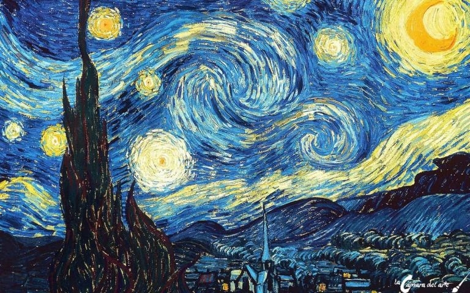
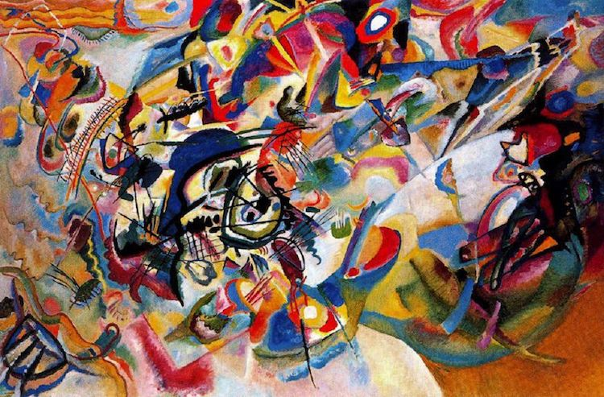
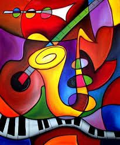

titulo 1
El arte es uno de los intereses del turista y muchos lo tienen en cuenta en su
elección de lugares y recorridos. Museos de todas las épocas o galerías de arte
especializadas conforman la amplia oferta que, especialmente las grandes capitales,
ofrecen a los inquietos viajeros. ¿Cuáles son las pinturas más famosas del mundo y dónde están?

Actor / fecha
titulo 2

ras siglos de seguir con las mismas tradiciones, los artistas abstractos trataron de hacer
cuadros que no se atuvieran a las “reglas” convencionales, como el naturalismo y la perspectiva.
Este estilo radical dio lugar a poderosas pinturas líricas que hacían hincapié en el color, la composición y la emoción.

Se define como la manifestación del arte abstracto en la pintura, es decir, la pintura tiene como tema principal la abstracción.
Es considerada como abstracta si no representa, en ningún sentido,
a la pintura figurativa,